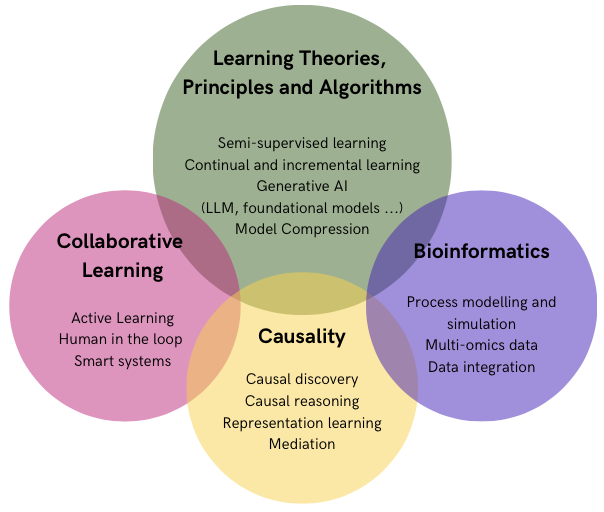
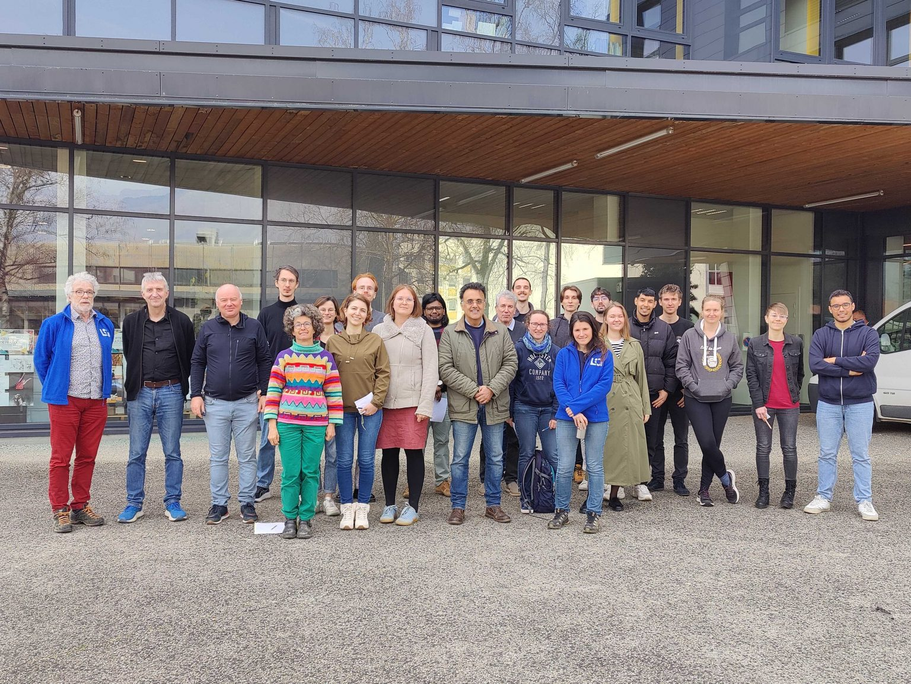

Welcome to Aptikal!
The APTIKAL team (Algorithms, Principles and TheorIes for collaborative Knowledge acquisition And Learning), previously AMA, is the Machine Learning group of LIG created in January 2011. We are mostly interested in working on machine learning and information modeling for complex data. Within this framework, the team is interested in developing new theoretical tools, as well as new prototypes.

Our Research Activity

APTIKAL Team – February 2025